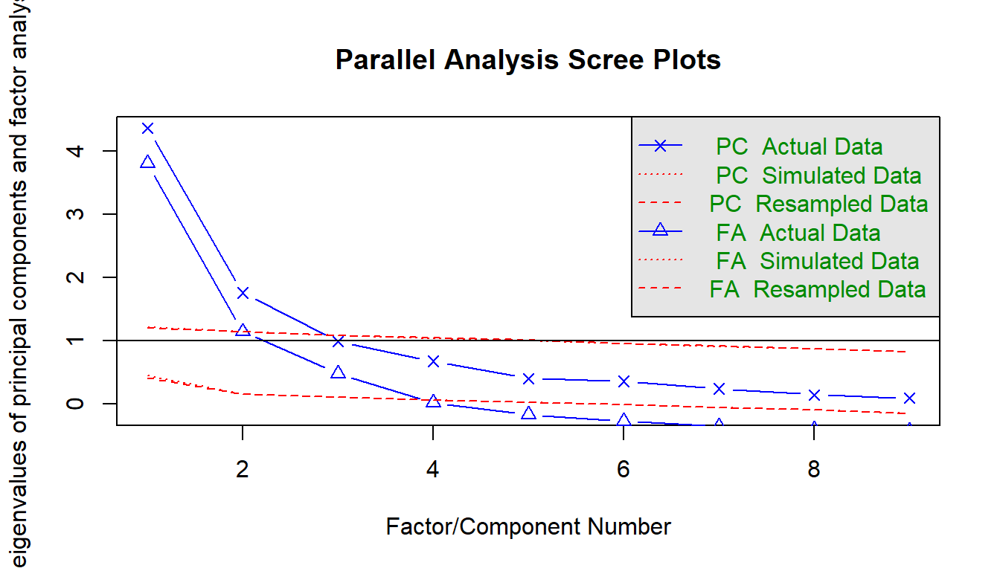
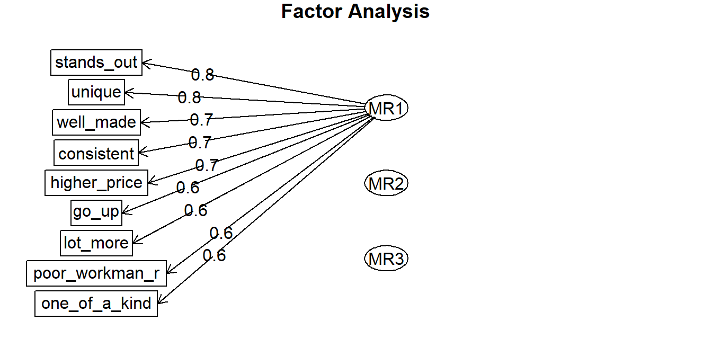

4.6 Item Reduction
The third phase, explores the mapping of the factors (aka “manifest variables”) to the latent variable’s “dimensions” and refines the survey to exclude factors that do not map to a dimension. A latent variable may have several dimensions. E.g., “brand loyalty” may consist of “brand identification”, “perceived value”, and “brand trust”. Exploratory factor analysis (EFA), identifies the dimensions in the data, and whether any items do not reveal information about the latent variable. EFA establishes the internal reliability, whether similar items produce similar scores.
Start with a parallel analysis and scree plot. This will suggest the number of factors in the data. Use this number as the input to an exploratory factor analysis.
4.6.1 Parallel Analysis
A scree plot is a line plot of the eigenvalues. An eigenvalue is the proportion of variance explained by each factor. Only factors with eigenvalues greater than those from uncorrelated data are useful. You want to find a sharp reduction in the size of the eigenvalues (like a cliff), with the rest of the smaller eigenvalues constituting rubble (scree!). After the eigenvalues drop dramatically in size, additional factors add relatively little to the information already extracted.
Parallel analysis helps to make the interpretation of scree plots more objective. The eigenvalues are plotted along with eigenvalues of simulated variables with population correlations of 0. The number of eigenvalues above the point where the two lines intersect is the suggested number of factors. The rationale for parallel analysis is that useful factors account for more variance than could be expected by chance.
psych::fa.parallel() compares a scree of your data set to a random data set to identify the number of factors. The elbow below here is at 3 factors.

## Parallel analysis suggests that the number of factors = 3 and the number of components = 24.6.2 Exporatory Factor Analysis
Use psych::fa() to perform the factor analysis with your chosen number of factors. The number of factors may be the result of your parallel analysis, or the opinion of the SMEs. In this case, we’ll go with the 3 factors identified by the parallel analysis.
## Loading required namespace: GPArotation## Warning in fac(r = r, nfactors = nfactors, n.obs = n.obs, rotate = rotate, : I
## am sorry, to do these rotations requires the GPArotation package to be
## installed
Using EFA, you may tweak the number of factors or drop poorly-loading items. Each item should load highly to one and only one dimension. This one dimension is the item’s primary loading. Generally, a primary loading > .7 is excellent, >.6 is very good, >.5 is good, >.4 is fair, and <.4 is poor. Here are the factor loadings from the 3 factor model.
##
## Loadings:
## MR1 MR2 MR3
## well_made 0.727 -0.528 0.145
## consistent 0.709 -0.594 0.144
## poor_workman_r 0.556 -0.457 0.123
## higher_price 0.691 0.305 0.160
## lot_more 0.566 0.499 0.316
## go_up 0.650 0.520 0.313
## stands_out 0.812 0.174 -0.553
## unique 0.760 0.114 -0.485
## one_of_a_kind 0.554
##
## MR1 MR2 MR3
## SS loadings 4.104 1.496 0.830
## Proportion Var 0.456 0.166 0.092
## Cumulative Var 0.456 0.622 0.714The brand-rep survey items load to 3 factors well except for the one_of_a_kind item. Its primary factor loading (0.309) is poor. The others are either very good (.6-.7) and excellent (>.7) range.
Look at the model eigenvalues. There should be one eigenvalue per dimension. Eigenvalues a little less than one may be contaminating the model.
## [1] 4.35629549 1.75381015 0.98701607 0.67377072 0.39901205 0.35865598 0.23915591
## [8] 0.14238807 0.08989556Look at the factor score correlations. They should all be around 0.6. Much smaller means they are not describing the same latent variable. Much larger means they are describing the same dimension of the latent variable.
## MR1 MR2 MR3
## MR1 1.000000000 -0.005039388 -0.05631023
## MR2 -0.005039388 1.000000000 -0.04588444
## MR3 -0.056310232 -0.045884440 1.00000000If you have a poorly loaded dimension, drop factors one at a time from the scale. one_of_a_kind loads across all three factors, but does not load strongly onto any one factor. one_of_a_kind is not clearly measuring any dimension of the latent variable. Drop it and try again.
## Loading required namespace: GPArotation## Warning in fac(r = r, nfactors = nfactors, n.obs = n.obs, rotate = rotate, : I
## am sorry, to do these rotations requires the GPArotation package to be
## installed##
## Loadings:
## MR1 MR2 MR3
## well_made 0.721 -0.522 0.157
## consistent 0.713 -0.600 0.166
## poor_workman_r 0.552 -0.455 0.134
## higher_price 0.669 0.297 0.147
## lot_more 0.565 0.501 0.321
## go_up 0.658 0.534 0.337
## stands_out 0.816 0.166 -0.527
## unique 0.774 0.111 -0.488
##
## MR1 MR2 MR3
## SS loadings 3.799 1.504 0.825
## Proportion Var 0.475 0.188 0.103
## Cumulative Var 0.475 0.663 0.766## [1] 4.00884429 1.75380537 0.97785883 0.42232527 0.36214534 0.24086772 0.14404264
## [8] 0.09011054## MR1 MR2 MR3
## MR1 1.000000000 -0.005574388 -0.03945015
## MR2 -0.005574388 1.000000000 -0.03352857
## MR3 -0.039450149 -0.033528573 1.00000000This is better. We have three dimensions of brand reputation:
- items
well_made,consistent, andpoor_workman_rdescribe Product Quality, - items
higher_price,lot_more, andgo_updescribe Willingness to Pay, and - items
stands_outanduniquedescribe Product Differentiation
Even if the data and your theory suggest otherwise, explore what happens when you include more or fewer factors in your EFA.
## Loading required namespace: GPArotation## Warning in fac(r = r, nfactors = nfactors, n.obs = n.obs, rotate = rotate, : I
## am sorry, to do these rotations requires the GPArotation package to be
## installed##
## Loadings:
## MR1 MR2
## well_made 0.744 -0.504
## consistent 0.725 -0.569
## poor_workman_r 0.570 -0.442
## higher_price 0.704 0.343
## lot_more 0.558 0.495
## go_up 0.641 0.517
## stands_out 0.730 0.145
## unique 0.704 0.105
## one_of_a_kind 0.566
##
## MR1 MR2
## SS loadings 3.971 1.436
## Proportion Var 0.441 0.160
## Cumulative Var 0.441 0.601## Loading required namespace: GPArotation## Warning in fac(r = r, nfactors = nfactors, n.obs = n.obs, rotate = rotate, : I
## am sorry, to do these rotations requires the GPArotation package to be
## installed##
## Loadings:
## MR1 MR2 MR3 MR4
## well_made 0.719 -0.522 0.112 0.124
## consistent 0.706 -0.599 0.108 0.165
## poor_workman_r 0.551 -0.454 0.106
## higher_price 0.685 0.301 0.140
## lot_more 0.561 0.499 0.262 0.185
## go_up 0.652 0.537 0.266 0.236
## stands_out 0.795 0.164 -0.540
## unique 0.758 0.112 -0.526
## one_of_a_kind 0.657 0.306 -0.686
##
## MR1 MR2 MR3 MR4
## SS loadings 4.167 1.506 0.854 0.620
## Proportion Var 0.463 0.167 0.095 0.069
## Cumulative Var 0.463 0.630 0.725 0.794The two-factor loading worked okay. The 4 factor loading only loaded one variable to the fourth factor. In this example the SME expected a three-factor model and the data did not contradict the theory, so stick with three.
Whereas the item generation phase tested for item equivalence, the EFA phase tests for internal reliability (consistency) of items. Internal reliability means the survey produces consistent results. The more common statistics for assessing internal reliability are Cronbach’s Alpha, and split-half.
4.6.3 Cronbach’s Alpha
In general, an alpha <.6 is unacceptable, <.65 is undesirable, <.7 is minimally acceptable, <.8 is respectable, <.9 is very good, and >=.9 suggests items are too alike. A very low alpha means items may not be measuring the same construct, so you should drop items. A very high alpha means items are multicollinear, and you should drop items. Here is Cronbach’s alpha for the brand reputation survey, after removing the poorly-loading one_of_a_kind variable.
## [1] 0.8557356This value is in the “very good” range. Cronbach’s alpha is often used to measure the reliability of a single dimension. Here are the values for the 3 dimensions.
psych::alpha(brand_rep[, 1:3])$total$std # Product Quality
## [1] 0.8918025
psych::alpha(brand_rep[, 4:6])$total$std # Willingness to Pay
## [1] 0.8517566
psych::alpha(brand_rep[, 7:8])$total$std # Product Differentiation
## [1] 0.951472Alpha is >0.7 for each dimension. Sometimes the alpha for our survey as a whole is greater than that of the dimensions. This can happen because Cronbach’s alpha is sensitive to the number of items. Over-inflation of the alpha statistic can be a concern when working with surveys containing a large number of items.
4.6.4 Split-Half
Use psych::splitHalf() to split the survey in half and test whether all parts of the survey contribute equally to measurement. This method is much less popular than Cronbach’s alpha.
## Split half reliabilities
## Call: psych::splitHalf(r = brand_rep[, 1:8])
##
## Maximum split half reliability (lambda 4) = 0.93
## Guttman lambda 6 = 0.92
## Average split half reliability = 0.86
## Guttman lambda 3 (alpha) = 0.86
## Guttman lambda 2 = 0.87
## Minimum split half reliability (beta) = 0.66
## Average interitem r = 0.43 with median = 0.4